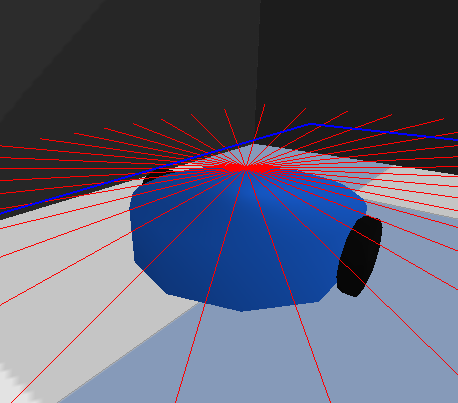
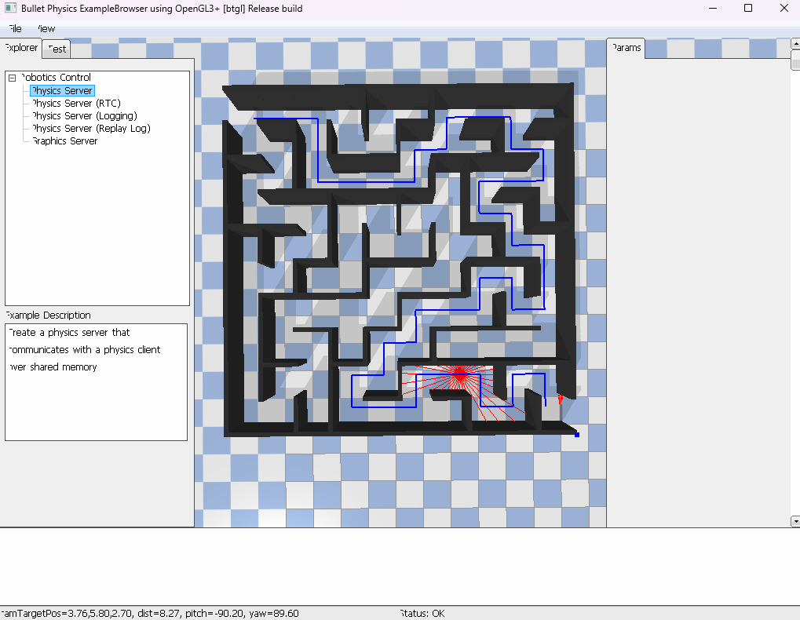
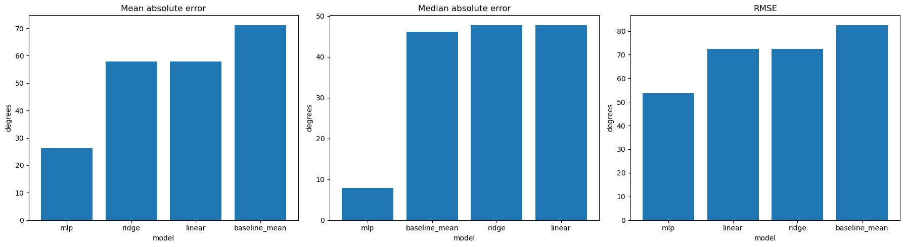
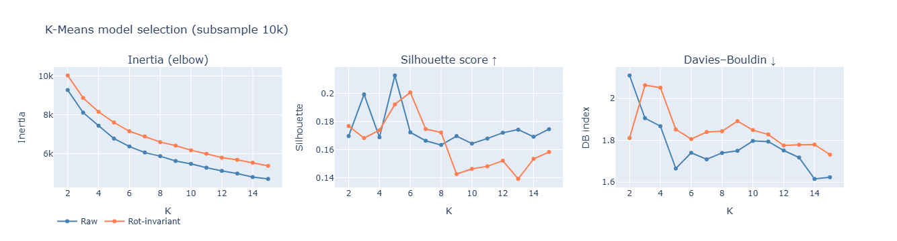
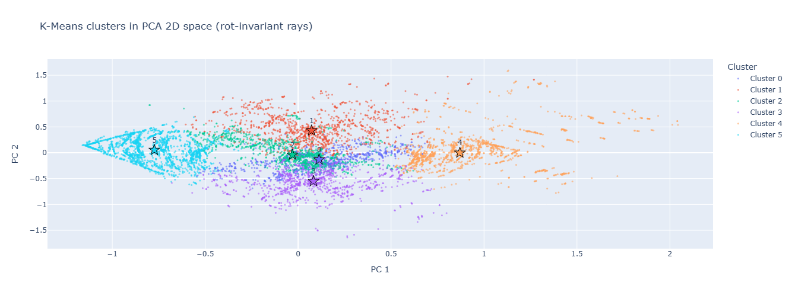
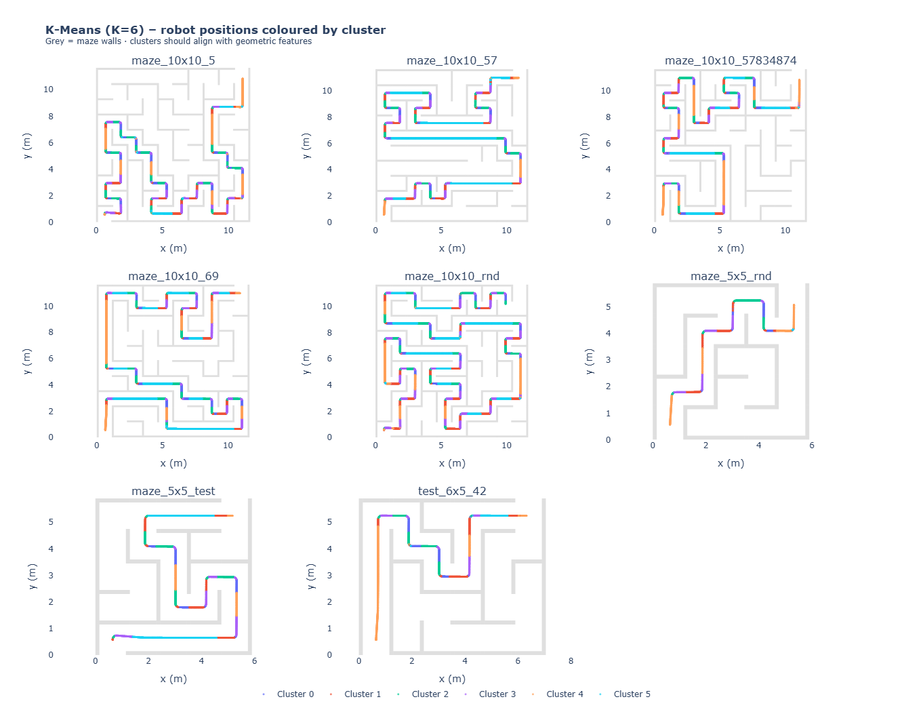
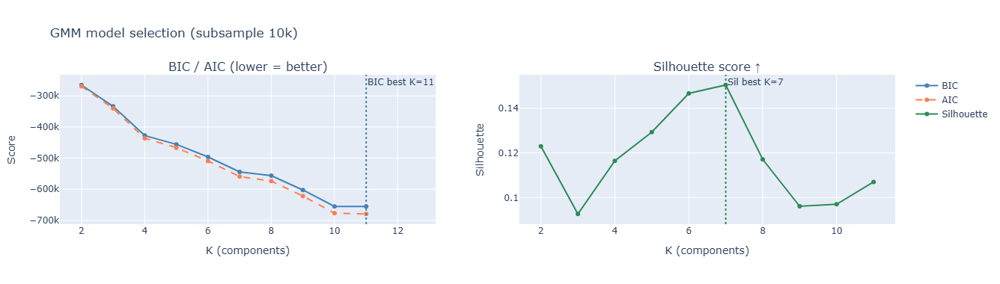
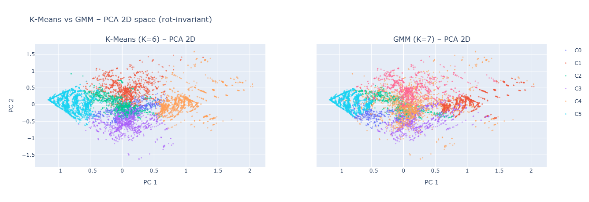
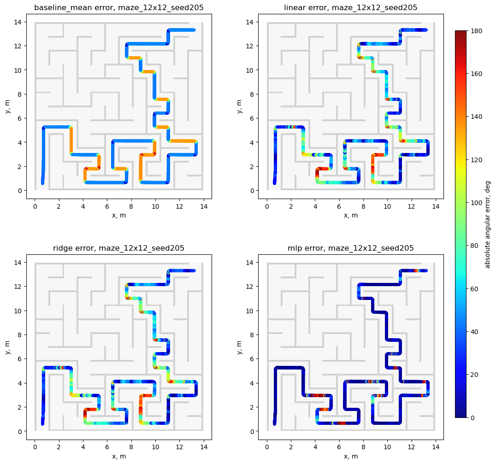
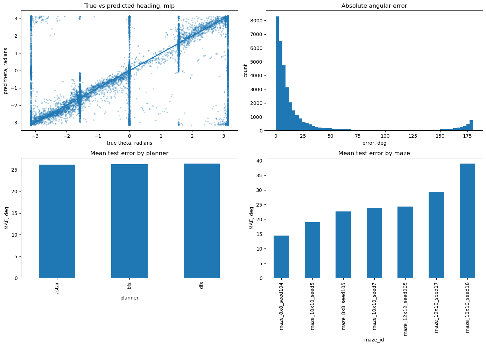

Team Members: Nicolas Caballero, Vladyslav Havriutkin, Andrew Li, Evan Rosenthal, Rakesh Shankar
Robotic maze navigation often relies on classical algorithms like A* or Dijkstra, which require full map knowledge and struggle with sensor noise. To improve generalization, supervised models like Random Forests [1] and Neural Networks [2] map sensor inputs to actions. Additionally, unsupervised methods like PCA, K-Means, and Gaussian Mixture Models [3] reduce high-dimensional sensor data into meaningful states. This project compares these paradigms to predict expert navigation commands from local data.
This project has two main objectives. The first objective is to develop a supervised learning model that predicts the robot heading from local rangefinder sensor data alone. This is the Supervised Learning portion of the project.
For the supervised study completed so far, the model uses the 36 raycast distances as input and predicts robot heading as a continuous variable. Rather than regressing the angle directly, the model predicts sin(θ) and cos(θ), and the final heading is recovered using atan2.
Performance is evaluated using wrapped angular error on held out mazes. This measures how well the model generalizes to unseen maze layouts while avoiding optimistic leakage from near duplicate samples in the same maze.
The second objective is to train a model to intake purely raycast data and output a prediction for which structural primitive the robot is currently in. This is the Unsupervised Learning portion of the project. Since the maze is purely grid-based, the structural primitives include:
Performance is evaluated using well-known clustering metrics, including Silhouette score and the DB Index.
We implemented a physics-based simulation in PyBullet containing a differential-drive robot equipped with 36 raycast sensors, arranged radially emanating from the top of the robot. Maze environments are procedurally generated to ensure a diverse dataset of navigation situations.

Expert trajectories are generated using classical navigation algorithms and a PD controller. During execution we record:
x and yθTo collect a wide variety of data, the robot is run through the maze using A*, BFS, and DFS. Simulations are run using parallelization to collect data efficiently and quickly.

To provide a wide variety of maze environments to collect data on, we randomly generate mazes using a helper script. Mazes are stored as a JSON file for easy reconstruction during robot simulation, as well as easy path calculation for our expert algorithms.
Additionally, we introduced several perturbations to the data collection pipeline to increase variety and reduce overfitting to the expert controller. These perturbations serve to simulate the imperfections that are normally encountered in real-world systems Furthermore, these changes encourage the models to generalize beyond clean and deterministic expert demonstrations.
All perturbations are controlled by command line interface argument parameters and are applied on top of the original clean data collection, so the final training set contains both unperturbed expert trajectories and augmented trajectories with noise. This combined dataset was used for both the supervised and unsupervised experiments reported in the final results.
The perturbations applied are listed below:
For the supervised heading regression experiment, we keep the 36 ray distances in the robot frame and do not rotate them to align with true north. This avoids leaking the target heading into the feature representation. The ray magnitudes are scaled before training, and the target heading is converted into sin(θ) and cos(θ) for stable regression.
For the unsupervised clustering experiment, we additionally explored direction normalized versions of the ray data to study how maze geometry changes under rotation invariant and direction preserving representations.
We implemented a supervised heading regression pipeline using the 36 raycast distances as input features. The target heading was represented as sin(θ) and cos(θ), which avoids the discontinuity at angular wraparound. During inference, the final heading prediction was recovered using atan2.
The dataset contained 184,418 labeled samples collected from 32 procedurally generated mazes and three expert planners, A*, BFS, and DFS. To obtain an honest estimate of generalization, train, validation, and test splits were performed by maze ID rather than by randomly splitting rows. This prevented near duplicate states from the same maze from appearing in both training and test data.
We compared four supervised models: a mean baseline, linear regression, ridge regression, and a multilayer perceptron regressor. Linear and ridge models served as interpretable baselines, while the MLP tested whether heading information was encoded nonlinearly in the raycast pattern. Features were scaled before training, and model performance was measured using wrapped angular error in degrees.

For our unsupervised approach, we implemented both K-Means and GMM clustering in order to identify the navigational states encountered by the robot as it navigates through the maze. The raw input consists of 36 raycast sensor readings per timestep, each representing the distance to the nearest object at evenly spaced angles around the robot.
To prepare the data for clustering, we applied a rotation-invariant feature transformation, ensuring that the extracted features capture the spatial structure of the robot's surroundings regardless of its heading direction. This is crucial because without this step, the robot may encounter similar corridors and mistakenly label them as different due to the robot's direction being different.
We selected K-Means due to its simplicity, we suspected that K-Means wouldn't be the ideal model to cluster our data, since it's highly sensitive to outliers and noise. Regardless, our intention with using K-Means was to understand our data better, and how our data clusters under hard clustering.
Our second model is GMM. We selected GMM due to its robustness to noise and outliers. Since sensor data can be highly variable and noisy, we selected GMM to see how our data performs under soft clustering. GMM models each cluster as a Gaussian Distribution with its own mean and covariance, and works well on data with elliptical and overlapping cluster shapes. Therefore, we thought it would be a great choice for modeling our noisy sensor data.

Best K (rot-invariant, max silhouette): 6
Best K (raw, max silhouette): 5
Training K-Means with K=6 on full dataset, rot-invariant (74,581 samples)...
Inertia: 53971.3
Silhouette: 0.1942
Davies-Bouldin: 1.8319


The results of our tests show that there is generally poor separability between clusters. The silhouette score of 0.1942 for rotation-invariant data is on the lower end, and indicates that the K-Means clusters are barely separable. Similarly, the Davies-Bouldin score of 1.83 data is relatively high and signifies that the clusters are spread out and close to one another, which also indicates poor separability. Interestingly, the best K value for the rotation-invariant dataset is higher than the best K value in the raw dataset. Our team was initially surprised with this result since we thought that adding rotation-invariance would allow the model to recognize simpler patterns between positions in the maze (i.e. "facing north in a corridor is no different than facing east in a similarly shaped corridor"). We believe the cause of this apparent phenomenon is due to the noisiness of our data. K-Means is highly sensitive to noisy data, and our dataset is expectedly noisy due to the nature of raycast sensors in simulated environments. Even though K-Means doesn't appear to be the best model for clustering our data, we were surprised with how well it performed given the nature of our data. We believe that this is, in part, due to the pathfinding of the robot, since we meticulously optimized the robot's pathfinding abilities to ensure it always follows a straight path through the exact middle of the maze. The idea behind this is that unpredictable paths through the maze may affect the robot's ability to recognize clusters. While K-Means did impress us, we still believe that GMM will be able to handle the variance of our dataset better.

Best K by BIC: 11
Best K by silhouette: 7
Training GMM with K=7 on full dataset (74,581 samples)...
BIC: -4185181.6
Silhouette: 0.1130
Davies-Bouldin: 2.7894

Comparing the clustering performance of K-Means (K=6) and GMM (K=7) on the rotation-invariant feature set, K-Means produced stronger results across both shared evaluation metrics, achieving a Silhouette Score of 0.1942 versus 0.1130 and a Davies-Bouldin Index of 1.8319 versus 2.7894. These results suggest that K-Means is producing more compact, well-separated clusters on this dataset. While GMM's ability to model soft, overlapping cluster boundaries is generally considered an advantage, we believe that it may be overfitting to the data somehow, and this is why we see much better results with K-means compared to GMM. K-Means, by contrast, may be benefiting from its simplicity. It is also worth noting that the difference in K (6 vs 7) complicates direct comparison, as the additional cluster in the GMM may be fragmenting the data and artificially deflating its metric scores. Though this result of K-Means performing better than GMM was surprising, we believe that, upon further analysis in the final project, we should be able to figure out if there's an error in our implementation if we need to process the data somehow, or if there's some other explanation for our GMM results.
After adding more sophisticated domain randomization to the data collection pipeline, we reran K-Means and GMM on the combined dataset containing both the original expert trajectories and the augmented trajectories. As a result, the robot explored parts of each maze that the fixed entrance-to-exit (initial configuration) path never visited.
Both models showed substantial improvements in cluster separability:
| Model | K (initial) | Silhouette (initial) | DB Index (initial) | K (augmented) | Silhouette (augmented) | DB Index (augmented) |
|---|---|---|---|---|---|---|
| K-Means | 6 | 0.1942 | 1.8319 | 14 | 0.3325 | 1.2775 |
| GMM | 7 | 0.1130 | 2.7894 | 9 | 0.2919 | 1.4551 |
For K-Means, the silhouette score improved by 71.2%, and its DB index dropped by 30.3%. For GMM, the silhouette score improved by 158.3% and its DB index dropped by 47.8%. Notably, these scores suggest that GMM's earlier underperformance was due to limited data diversity rather than an erorr with the model.
Additionally, the optimal K values increased for both models, which suggests that with the added perturbations, the robot encounters a wider variety of geometric configurations. The original 4 geometric classes of straight hallways, corners, 3-way intersections, and 4-way intersections may have been too little to characterize the data. The augmented data revealed additional subtypes that produce meaningfully distinct sensor signatures.
| Model | Test MAE, deg | Median error, deg | RMSE, deg |
|---|---|---|---|
| Baseline mean | 71.19 | 46.13 | 82.54 |
| Linear regression | 57.88 | 47.81 | 72.46 |
| Ridge regression | 57.88 | 47.81 | 72.46 |
| MLP regressor | 26.32 | 7.81 | 53.65 |
The supervised heading regression results show a clear difference between linear and nonlinear models. Linear regression and ridge regression both improved over the baseline, but their test errors remained high, with mean absolute angular error near 58 degrees. In contrast, the MLP regressor reduced test MAE to 26.32 degrees and reduced median error to 7.81 degrees. This indicates that the raycast measurements contain useful heading information, but the relationship is strongly nonlinear.
The planner wise results were also stable, with nearly identical mean errors across A*, BFS, and DFS. This suggests the learned representation generalizes across different expert path styles rather than overfitting to a single planner. Spatial error maps showed that large residual errors were concentrated in more ambiguous regions of the maze, such as turns, intersections, and symmetric local geometries.
Overall, the supervised results support two conclusions. First, heading prediction from local ray data is feasible. Second, a nonlinear model is needed to extract this information effectively. The MLP provided the best performance among the models tested and is the strongest supervised baseline completed at this stage.


We reran all four supervised models on the augmented dataset, using the same training / validation / testing split to keep the comparison consistent.
| Model | MAE, initial | MAE, augmented | MAE % change | Median, initial | Median, augmented | Median % change |
|---|---|---|---|---|---|---|
| Baseline mean | 71.19 | 40.02 | -43.8% | 46.13 | 34.03 | -26.2% |
| Linear regression | 57.88 | 32.30 | -44.2% | 47.81 | 17.64 | -63.1% |
| Ridge regression | 57.88 | 31.42 | -45.7% | 47.81 | 16.66 | -65.2% |
| MLP regressor | 26.32 | 16.83 | -36.1% | 7.81 | 3.69 | -52.7% |
As the table shows, every model improved on every metric. The linear models benefited the most in relative terms, with ridge regression MAE dropping 45.7%. This is likely because the increased data diversity reduced 'blind spots' in the sensor inputs, simplifying the mapping so that the models didn't have to struggle as much with complex nonlinear patterns. The MLP remained the strongest model overall, achieving a median error of only 3.69 degrees.
[sensor readings, goal heading] as input and compare KNN, Random Forest, and MLP classifiers.| Name | Final Contributions |
|---|---|
| Nicolas Caballero | Autonomous navigation using MLP and GMM, creating the videos for the slideshow |
| Vladyslav Havriutkin | Final presentation slideshow, Website, Final Videos |
| Andrew Li | Domain Randomization Implementation / Data Collection / Results, Final Presentation |
| Evan Rosenthal | Final presentation, Website, Simulation and Project Polish |
| Rakesh Shankar | Final presentation, Website |